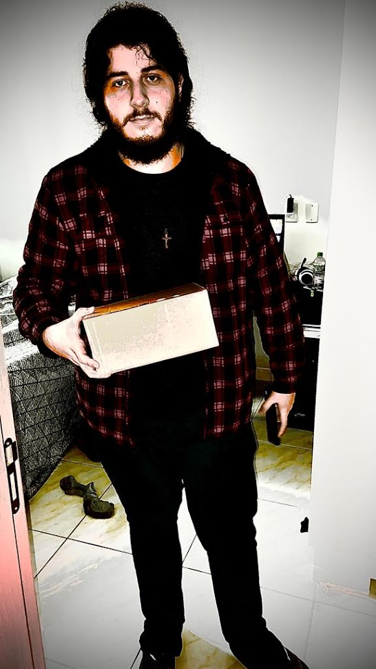
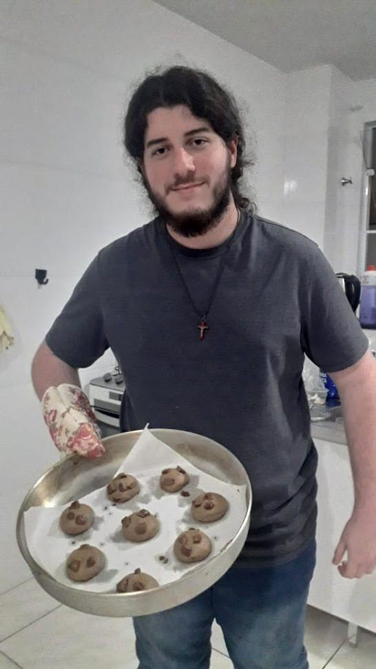
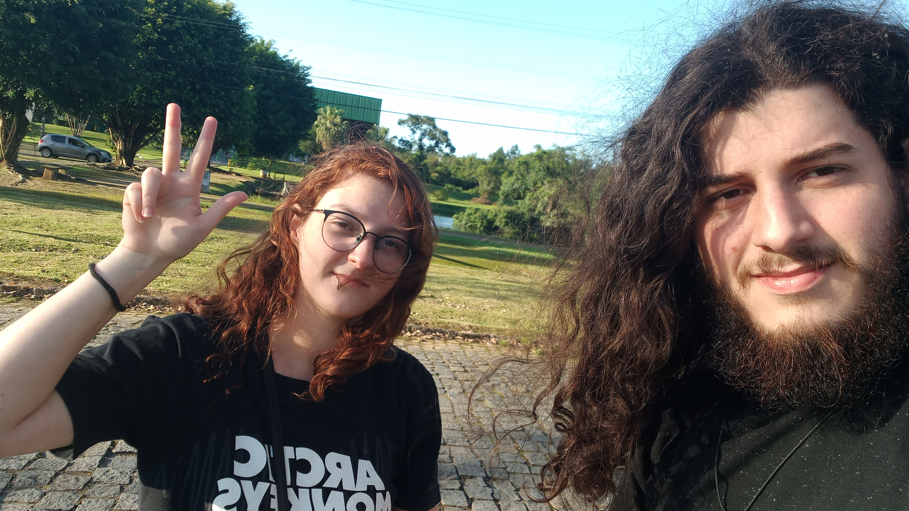
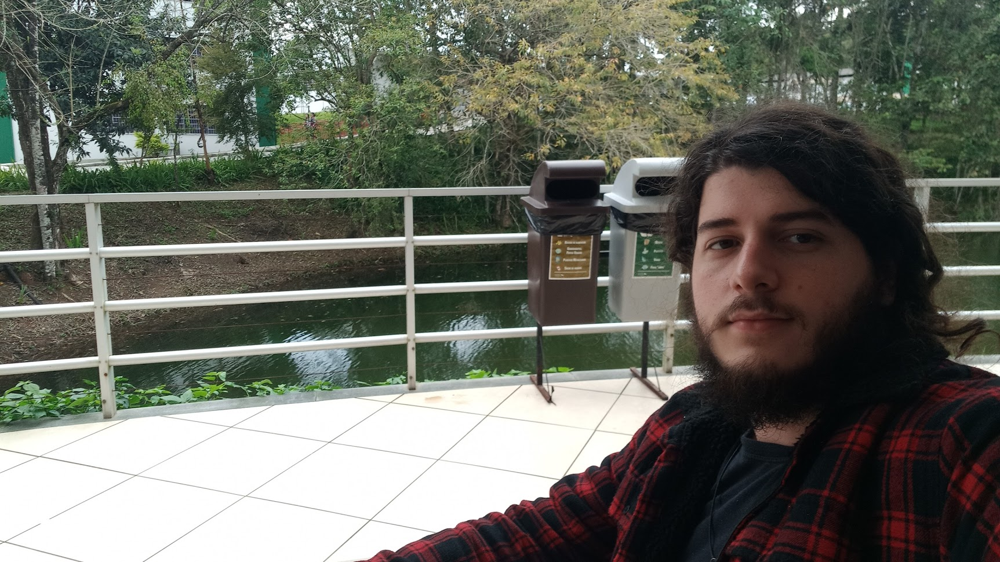
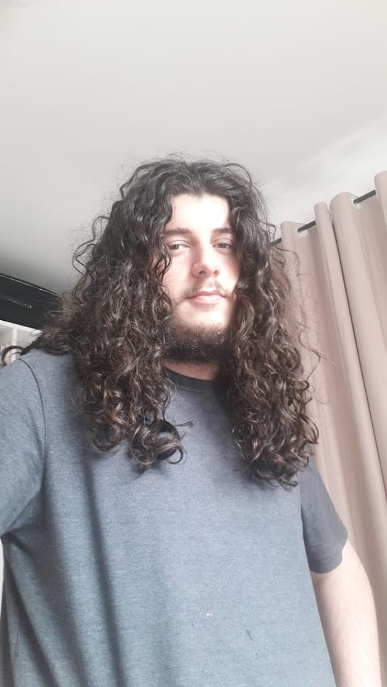
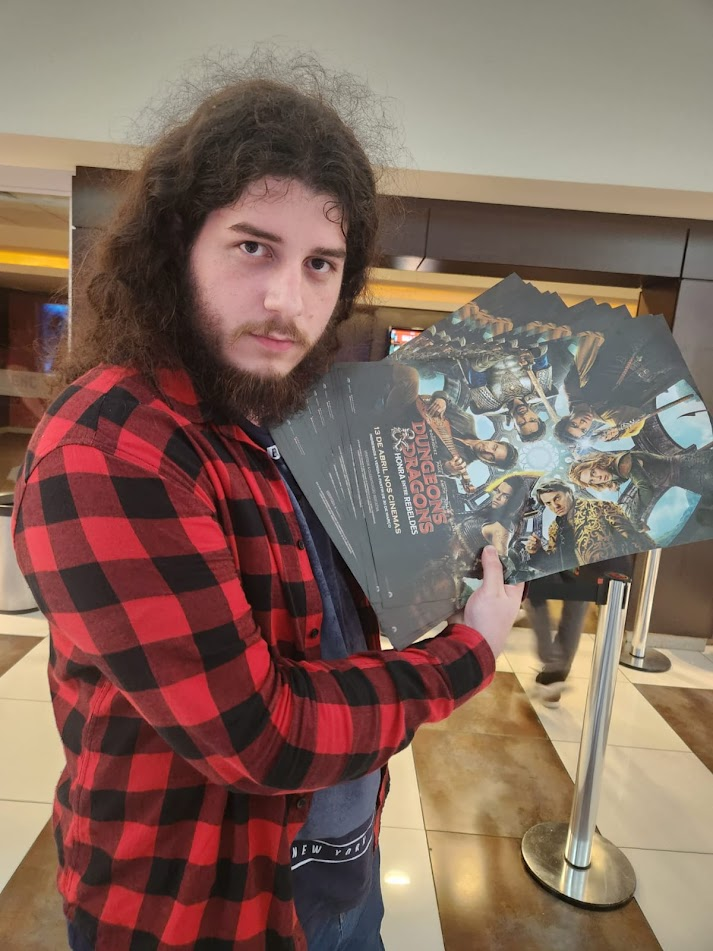
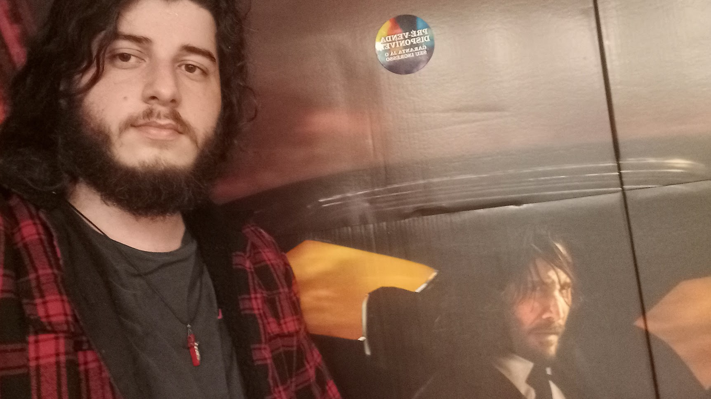

Olá! Me chamo Marco Antonio Reche Rigon. Nasci em 02/03/2004 e cresci em Ouro Preto do Oeste, Rondônia, Brasil.
Atualmente, curso Ciência da Computação na UDESC, câmpus Joinville.
Hobbies
- Games e informática
- Assitir filmes e séries
- Cozinhar
Habilidades
- Conhecimento básico de manipulação de áudio, por meio do
Audacity
- Conhecimento básico de edição de imagens, por meio do
GIMP
- Conhecimento de HTML, JavaScript, CSS, C# e Python
- Conhecimento básico de C
- Fluência em inglês
Vida acadêmica e profissional
- Técnico em informática, formado pelo Instituto Federal de Rondônia, câmpus Ji-Paraná.
- Mediador de português em 2021
- Estágio na Tecnobyte, de Ji-Paraná, Rondônia.
- Estudante de Ciência da Computação na UDESC, câmpus CCT.
- Membro do grupo de extensão de software e hardware livre, Colmeia, da UDESC CCT.
Cursos que realizei / Estou fazendo
Fotos minhas







Um pouco mais sobre meus hobbies
O hobby que mais gosto são os videogames. Amo diversos tipos de jogos, sendo o meu favorito
Metal Gear Solid.
Os meus filmes favoritos são filmes de terror. Apaixonado em Halloween e Jogos Mortais.
Gosto de cozinhar, principalmente coisas doces. Gosto de fazer bolos, biscoitos e rosquinhas.
Gosto mais de fazer algo com carnes, seja assado ou algo mais elaborado.